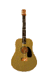
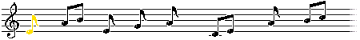

|  |
Geno7's Music Commissions |
I'm pretty flexible when it comes to genre. For examples of what I can do check my YouTube Channel or Consult The Phonochronographizer!
I offer two flavors of music commissions. Pick the one that's right for you!
🎵MUSIC SKETCH COMMS🎵
— geno7 (@geno7_) May 10, 2023
help my abysmal financial situation by getting me a coffee and ill make a little song for you!! link below!! pic.twitter.com/lbQF3b3HIg
Tip me $10 minimum on ko-fi with a few descriptive words! A genre, a vibe, a theme for a character, what have you! I'll use that description to make you a little song!
Songs will be "Musical Sketches" - lofi, less than 30 seconds, and with simple instrumentation. As opposed to regular music commissions, the process is quicker and simpler, but does NOT involve revisions/corrections. Songs will be posted as videos on Twitter and with accompanying Google Drive links, I'll reply to your ko-fi message with a link to the song once it's done.
You're free to use a music sketch how you want (barring stuff that promotes hate speech) but they're not really something intended for use in serious for-profit stuff, they're just kinda fun doodles. If you really like the music sketch I made you and are interested in having me flesh it out into a full song, we can talk.
if you're interested in a more complex music comm, I do that too!! my prices are different now!! hit me up at geno7art@gmail.com and we can cook something up! slot availability subject to change! pic.twitter.com/y7qbMdfWm7
— geno7 (@geno7_) May 10, 2023
$50 for songs less than 30 seconds
$75 for every 30 seconds of music
ADD $75 for lyrics/vocals
This is the option to go with if you're wanting a more involved commission. I'll send WIP demos of the songs I work on for you! Feel free to ask me for revisions. $10 for every revision after the first two.
What exactly constitutes a "Revision" is sort of nebulous but at the beginning of a song's life, it's something we're both kinda figuring out as I'm roughing it out. However, if a song reaches a later stage when a lot of work has been done on it and it's requested of me to redo a significant enough portion of it or change direction to a drastic enough degree, the amount of work I'm doing starts to add up and I want to make sure I'm compensated for it, which is why I charge $10 per revision after the first two revisions. But I definitely err on the side of the client with this and I always make sure to let you know if something is gonna count as a revision because I never want to charge you without your knowledge.
Generally speaking, any song I make you you're free to use however you want, barring stuff that promotes hate speech and all that. If a song is for a project that you intend to profit from, we may need to discuss further details, but it varies on a case-by-case basis.
Any compositions I make for you I reserve the rights to use or sell (as physical or digital album(s), as streaming, as monetized YouTube uploads, etc) and keep any profits, however, if a song is being made for a project and you'd prefer I wait for the project to be released before I make the song public, I'm totally fine with that.
If you have any further questions, feel free to contact me!